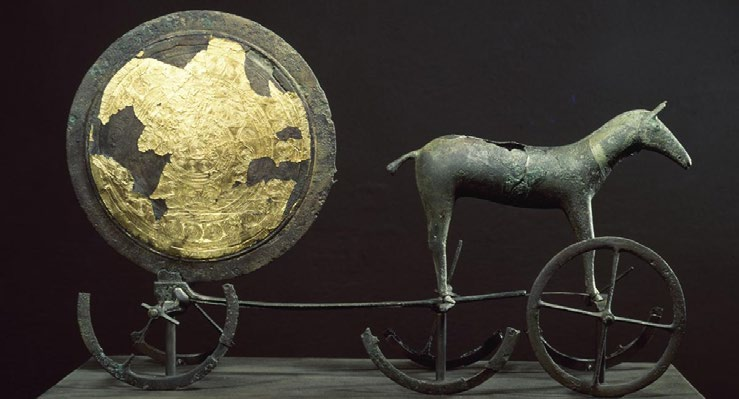
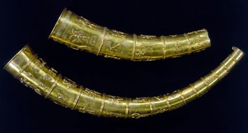
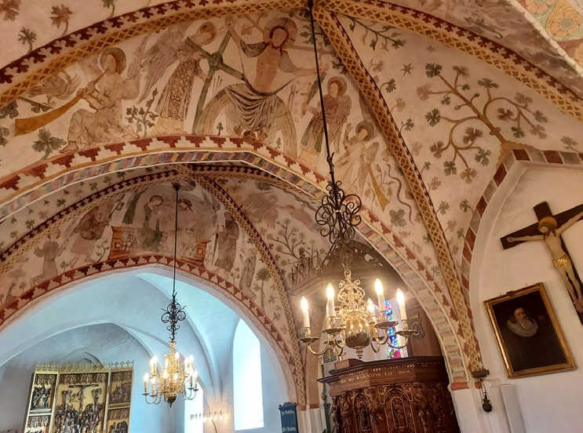
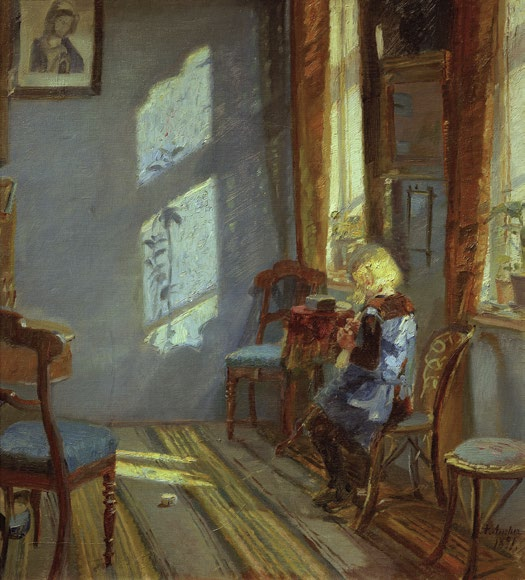
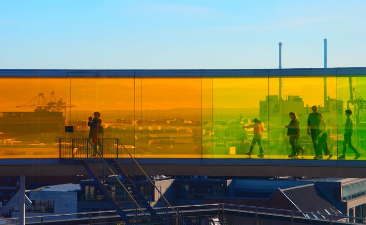

5.3 – BILLEDEKUNST OG SKULPTUR
sidde 153
Og Skulptur
De ældste eksempler på billedkunst og udsmykning af genstande i Danmark går langt tilbage i tiden. Den vigtigste skat fra de ældste tider er den såkaldte Solvogn – en figur, der forestiller solen, der bliver trukket af en hest. Solvognen stammer fra den ældre bronzealder, cirka 1350 før Kristus. I den tids religion blev solen tilbedt, og Solvognen viser, hvordan solen om dagen blev trukket hen over himlen af en af sine hjælpere, en hest. En slange, en fisk og to skibe førte solen igennem resten af døgnets timer. Solvognen er fremstillet af guld og bronze.Solvognen fra bronzealderen, som er fundet i Trundholm Mose, Nordvest-sjælland. Foto: Nationalmuseet.
Solvognen fra bronzealderen, som er fundet i Trundholm Mose, Nordvestsjælland. Foto: Nationalmuseet.
Der blev i henholdsvis 1639 og 1734 gjort et stort guldfund i form af guld hornene fra Gallehus i Sønderjylland. De var udsmykket med mange figurer og med runer. Guldhornene stammer fra omkring 400 efter Kristus. De blev stjålet og omsmeltet i 1802. De er genskabt på grundlag af tegninger, men detaljer i udsmykningen er usikre.
Med kristendommens indførelse i Danmark fra 900-tallet kommer kirkekunsten til Danmark. Den blander sig med vikingetidens udsmykninger med menneske- og dyrefigurer. Det kan blandt andet ses på Harald Blåtands Jellingsten fra anden halvdel af 900-tallet, hvor Jesus fremstilles som en stærk og sejrende vikingekriger. Genskabte eksemplarer af guldhornene, som er udstillet på Nationalmuseet i Københav
Genskabte eksemplarer af guld hornene, som er udstillet på Nationalmuseet i København.
Læremateriale Til Indfødsretsprøven


sidde 154
Kalkmalerier i Birkerød Kirke nord for København. Foto: Tue Schou Pedersen.
Kalkmalerier af Biblens fortællinger i Birkerød Kirke nord for København. Foto: Tue Schou Pedersen.
Middelalderens (cirka 1050-1500) mange nybyggede kirker blev udstyret med kalkmalerier, der fungerede som en slags tegneserier. Malerierne skulle bidrage til, at det store flertal af befolkningen, der ikke kunne læse Bibelen og ikke forstod latin, som var kirkens sprog frem til reformationen, også kunne opfatte kristendommens budskaber.
Efter reformationen i 1536 var det især kongen og adelen, der brugte kunsten til at vise deres rigdom og betydning. De mange imponerende kunstværker på Kronborg i Helsingør demonstrerer kongens magt og herunder 40 vævede tapeter, der viser danske konger.
Christian 4. havde særlig stor interesse for kunst og kultur og fik flere kendte udenlandske malere til at komme til Danmark for at male kongen og hans familie samt udsmykke kongens mange slotte.
Med enevældens indførelse i 1660-61 blev magten centraliseret hos kongen. For at kunne uddanne danske kunstnere, der kunne måle sig med udlandets, grundlagde Frederik 5. (1746-66) Det Kongelige Danske Kunstakademi på Char lottenborg på Kongens Nytorv i København, hvor det stadig har sit hjemsted.
Læremateriale Til Indfødsretsprøven

sidde 155
Et værk fra denne periode, der anses for at være et højdepunkt i dansk kunst historie, er den franske Jacques-François-Joseph Salys (1717-76) rytterstatue af Frederik 5. (1746-66) fra 1771, der står midt på Amalienborg Slotsplads og regnes for at være en af Europas smukkeste rytterstatuer. Statuen kostede i øvrigt mere at opføre end Amalienborgs fire palæer tilsammen.
Første halvdel af 1800-tallet har fået betegnelsen Guldalderen, fordi dansk kultur, kunst og videnskab blomstrede med flere internationalt kendte navne: for eksempel forfatteren H.C. Andersen (1805-75), filosoffen Søren Kierkegaard (1813-55), fysikeren H.C. Ørsted (1777-1851), digteren Adam Oehlenschläger (1779-1850) og N.F.S. Grundtvig (1783-1872).
En berømt kunstner fra Guldalderen er Bertel Thorvaldsen (1770-1844), som er Danmarkshistoriens bedst kendte billedhugger. I 1797 rejste han til Italien og levede i mange år i Rom. Her skabte han – inspireret af kunsten fra Romer riget – en række skulpturer, blandt andet gravmonumentet over pave Pius 7. I 1838 vendte Thorvaldsen tilbage til Danmark. Hans skulpturer fik deres eget museum, Thorvaldsens Museum, der ligger i København. Museet åbnede 1848 og var den første museumsbygning i Danmark, som befolkningen havde adgang til. Her udstilles Thorvaldsens skulpturer samt hans egen samling af malerier og kunstgenstande fra den antikke oldtid for cirka 2.000 år siden.
Inden for malerkunsten er C.W. Eckersberg (1783-1853) en af de vigtigste kunst nere fra Guldalderen. Eckersberg var blandt andet med Thorvaldsen på studie ophold i Rom. Han arbejdede med motiver fra landskabet og folkelivet omkring Rom.
I tiden herefter har kunstmalere som Vilhelm Hammershøi (1864-1916) præget dansk billedkunst. Vilhelm Hammershøi er ikke mindst blevet værdsat af sin eftertid for sin evne til at male lys og skygge i en boligs rum. Hans maleri, ”Inte riør fra Strandgade 30”, er malet i år 1900 og forestiller malerens kone Ida, der står og læser i ægteparrets hjem på Christianshavn i København. Maleriet blev i 2023 solgt på en auktion i USA for 62,8 millioner kroner og blev dermed det dyrest solgte danske maleri nogensinde.
Læremateriale Til Indfødsretsprøven
sidde 156
Solskin i den blå stue, Anna Ancher (1891). Foto: Ritzau/Scanpix.
Solskin i den blå stue, Anna Ancher (1891). Foto: Ritzau/ Scanpix.
Andre betydelige kunstnere fra samme periode er P.S. Krøyer (1851-1909) og ægteparret Anna Ancher (1859-1935) og Michael Ancher (1849-1927), der hører til kredsen af de såkaldte Skagensmalere. Mod slutningen af 1800-tallet slog en række malere sig ned i Skagen, som er Danmarks nordligste by. De malede både den lokale befolknings hverdagsliv og malernes egne tilværelser. Lyset fra de to have, Skagerrak og Kattegat, der omgiver Skagen, kom til at spille en særlig rolle i deres billeder.
Billedhuggeren Anne Marie Carl-Nielsen (1863-1945) fik som den første kvinde i verden bestilling på at udføre en rytterstatue af en konge. I dag kan hendes rytterstatue af Christian 9. (reg. 1863-1906) ses på Christiansborgs Ridebane, ligesom hun er kendt for at stå bag bronzeporterne i Ribe Domkirke. Anne Marie Carl-Nielsen kæmpede gennem sit liv for kvinders adgang til akademiske uddan nelser og til deres ret til at udstille værker på lige fod med mandlige kunsterne.
I nyere tid hører Asger Jorn (1914-73) til de verdensberømte danske billedkunst nere. Han var med til at stifte den internationale kunstnergruppe Cobra, der fik sit navn fra kunstnernes hjembyer København (Copenhagen), Bruxelles og Amsterdam. Cobra eksisterede fra 1948 til 1951. Hans hovedværk er det store maleri ”Stalingrad”, der er navngivet efter den by, hvor et af 2. Verdenskrigs blodigste slag fandt sted i 1942-43, og hvor Sovjetunionen besejrede Tyskland. Slaget regnes som krigens vendepunkt, som begyndelsen til det endelige tyske nederlag i 1945. Jorn arbejdede på billedet fra 1957-72. Den dominerende farve er hvid-grå som sneen ved byen og med røde stænk overalt, som symboliserer blod.
Læremateriale Til Indfødsretsprøven

sidde 157
Tre af de vigtigste billedkunstnere inden for de seneste årtier er Per Kirkeby (1938-2018), Bjørn Nørgaard (født 1947) og Lene Adler Petersen (født 1944). Kirkeby er internationalt anerkendt for sine store abstrakte malerier, der forholder sig til en naturverden, og hans billeder har været udstillet over alt i verden. Lene Adler Petersen har arbejdet med både film, aktioner, grafik, maleri og skulptur. I 1969 skabte hun og hendes mand Bjørn Nørgaard aktionen ”Den kvindelige Kristus”, hvor hun vandrede nøgen gennem Børsen i København med et kors i hånden. Aktionen blev et ikon for en ny eksperimenterende og kritisk kunst vendt mod kapitalistiske og mandsdominerende normer.
Et vigtigt nyere kunstværk er Bjørn Nørgaards hovedværk bestående af 17 store gobeliner (vægtæpper), som udsmykker riddersalen på Christiansborg og fortæller danmarkshistoriens gang tilbage fra vikingetiden og frem til vores tid. Gobelinerne var en fødselsdagsgave fra en række erhvervsorganisationer, virk somheder med mere til Dronningens 50-års fødselsdag i 1990. De tog 10 år at lave og blev indviet på Dronningens 60-års fødselsdag i år 2000.
En anden kunstner, der har gjort sig bemærket de seneste årtier, er danskislandske Olafur Eliasson (født 1967). Et af hans mest kendte værker er Your rainbow panorama (Din regnbueudsigt) (2011) oven på kunstmuseet ARoS i Aarhus, som er en 150 meter lang cirkelformet gangbro i glas, hvor man kan se ud over Aarhus i alle regnbuens farver.Your Rainbow Panorama, Olafur Eliasson 2011, ARoS Aarhus Kunstmuseum.
Your Rainbow Panorama, Olafur Eliasson 2011, ARoS Aarhus Kunstmuseum. Foto: Tue Schou Pedersen.
Læremateriale Til Indfødsretsprøven

Fonte: Læremateriale til Indfødsretsprøven, SIRI.